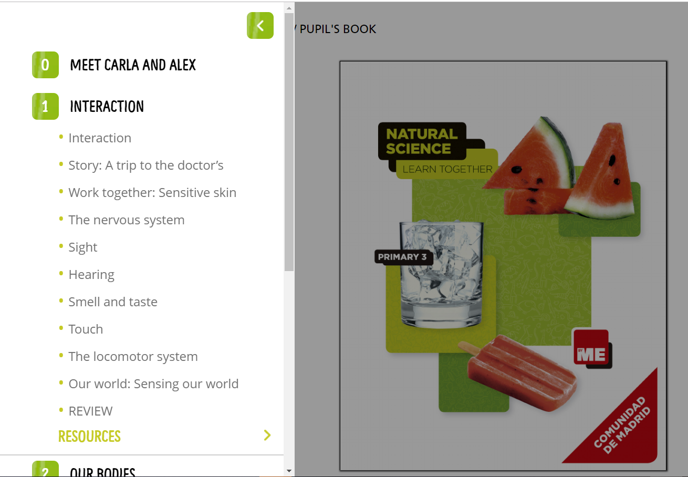

En este manual vamos a ver como se organizan y nombran las páginas en un libro, sus epígrafes, y múltiples características de manejo de la herramienta para poder conseguir el resultado deseado por la editorial. Combinando las diferentes opciones que vamos a ir viendo, se pueden obtener diversos resultados, por lo que es imposible abarcar todos los casos posibles. Comenzaremos realizando un ejemplo con un libro perteneciente al proyecto ByMe Learn Together, aunque en otros proyectos, las opciones pueden variar. A medida que un editor esté familiarizado con la herramienta, será capaz de combinar las opciones, para poder conseguir un resultado final u otro.
Para poder logarse en el CAT es necesario disponer de:
Como ya indicamos en manuales anteriores, el TOC es el menú lateral izq. de la herramienta “Makers editor” en el que se encuentran todas y cada una de las pág. que contiene nuestro libro:

Para la preparación del TOC, es necesario tener en todo momento abierto el archivo pdf de la unidad o parte del libro que estemos generando.
Comenzaremos la explicación con una unidad intermedia, ya que las unidades especiales tipo introducción, repaso o trimestral, tienen características especiales.
Abrimos el pdf de la unidad 1, en nuestro caso de ejemplo el archivo: 01_Alumno-U01_Contenidos.pdf de la carpeta PDF del repositorio:
En el cat, sobre el TOC, elegimos el ítem correspondiente con la misma unidad, que será la carpeta que contiene todas las pág. que comienzan con el mismo nombre del archivo pdf seguidas del nº de pág. real de impresión:
Haciendo doble clic sobre el ítem, se nos abre la pantalla de edición, en su modalidad de “Simple Editor”

En el campo Title copiamos y pegamos el título de la unidad existente en el pdf (ojo, revisar que todos los caracteres se han pegado correctamente, ya que a veces podemos arrastrar algún formato no deseado, si esto ocurriera, debemos eliminar formato en un editor externo al cat) y en el campo Description el número de la unidad a la que corresponde. En este caso, el resto de opciones disponibles en esta pantalla se dejan como vienen por defecto:
Pulsamos Save changes y esperamos a que nos salga mensaje de comit efectuado y que se recargue automáticamente el TOC:
Todas las demás unidades se irán renombrando del mismo modo. En el caso de las unidades especiales, deberán darnos las pautas deseadas desde editorial. En el ejemplo que nos ocupa se nombrarían de la siguiente manera:


También comenzaremos la explicación con una unidad intermedia, ya que las unidades especiales tipo introducción, repaso o trimestral, tienen características especiales (mismo motivo que antes).
Abrimos el pdf de la unidad 1, en nuestro caso de ejemplo el archivo: 01_Alumno-U01_Contenidos.pdf de la carpeta PDF del repositorio:
En el cat, sobre el TOC, elegimos el ítem correspondiente con la primera página de misma unidad, que será la carpeta que contiene todas las pág. que comienzan con el mismo nombre del archivo pdf seguidas del nº de pág. real de impresión.
Hacemos doble clic en el ítem y se nos abrirá el editor de nuevo, como en el apartado anterior. Normalmente la primera página se denomina igual que el título que hemos colocado en el epígrafe de la unidad. El campo description se deja vacío, y de momento el resto de opciones como vienen por defecto:
Las siguientes páginas que existan en el pdf, hasta que nos encontremos un nuevo epígrafe, se denominarán del mismo modo, ya que se trata de pág. que pertenecen al epígrafe que acabamos de crear.
En este caso, la 2ª pág. o posteriores que sean pertenecientes al epígrafe anterior, además de mantener el nombre, deberán tener la opción habilitada de is visible=no, para que no se nos muestre el mismo título más de una vez:
Observaremos al refrescarse el TOC, que este título nos aparece en un tono más claro, lo que indica a simple vista que la opción is visible=no ha sido activada:
Por ultimo, dado que esta página pertenece al epigrafe anterior, debemos descolgarla como item hijo, arrastrandola mediante el cursor y dando al save que nos aparece en la parte superior del TOC:

Esperaremos a que nos salga el mensaje de que el comit se ha realizado y se refresque el toc, para continuar con el proceso:
Se repite el proceso en todas y cada una de las pags de nuestro libro hasta que tengamos todas perfectamente renombradas y colocadas. Basta con ir siguiendo el pdf de cada tema añadiendo cada epigrafe nuevo del pdf como título, y el resto de las páginas que lo conforman se descuelgan de él como items hijos y título identico con opción is visible=no.
Una vez se genere el libro en la plataforma (se explicará en manual posterior cómo se realiza), el proceso de renombrado se iría viendo así:
Como podemos observar, los títulos que hemos ido dejando con la opción is visible=no, no se muestran en el índice del libro en el apartado de contenidos.
Siguiendo estas pautas, iremos renombrando todas las páginas de cada una de las unidades, hasta que hayamos completado la totalidad del libro.
En el caso de las unidades especiales, no requieren mención especial, dado que no hay más que seguir el pdf correspondiente utilizando las pautas indicadas en el apartado anterior.
La unidad 00_Alumno-U00_Contenidos.pdf, si suele tener un tratamiento especial, ya que como recordaremos, al inicio ya comentamos que contenía la cubierta, el índice y la unidad 0.
Iremos por tanto en el TOC al item correspondiente a la pag 1 que corresponde a la cubierta.
Renombraremos el item como Cover y lo colocaremos justo debajo del item que se ha generado por defecto en el manifiesto denominado Cubierta.
Editamos el item llamandolo cover y con propiedad is visible=no
Las páginas 2 y 3, se renombran como Contens 1 y 2 y se descuelgan de la Cover, hasta conseguir esta estructura:
Por tanto, el epígrafe correspondiente a la Ud 0, ya contendrá sólo las páginas correspondientes a esta unidad, que se renombrará del mismo modo que las unidades intermedias.